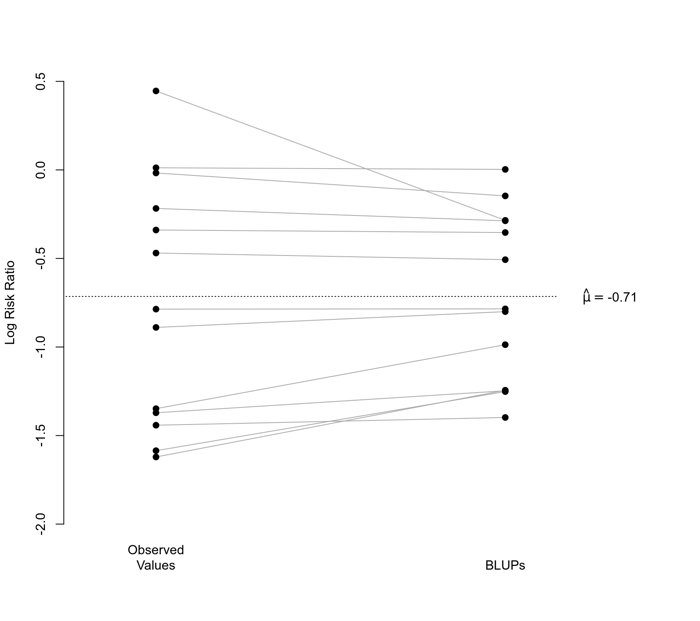

blup.RdFunction to compute best linear unbiased predictions (BLUPs) of the study-specific true effect sizes or outcomes (by combining the fitted values based on the fixed effects and the estimated contributions of the random effects) for objects of class "rma.uni". Corresponding standard errors and prediction interval bounds are also provided.
blup(x, ...)
# S3 method for class 'rma.uni'
blup(x, level, digits, transf, targs, ...)an object of class "rma.uni".
numeric value between 0 and 100 to specify the prediction interval level (see here for details). If unspecified, the default is to take the value from the object.
optional integer to specify the number of decimal places to which the printed results should be rounded. If unspecified, the default is to take the value from the object.
optional argument to specify a function to transform the predicted values and interval bounds (e.g., transf=exp; see also transf). If unspecified, no transformation is used.
optional arguments needed by the function specified under transf.
other arguments.
An object of class "list.rma". The object is a list containing the following components:
predicted values.
corresponding standard errors.
lower bound of the prediction intervals.
upper bound of the prediction intervals.
some additional elements/values.
The object is formatted and printed with the print function. To format the results as a data frame, one can use the as.data.frame function.
For best linear unbiased predictions of only the random effects, see ranef.
For predicted/fitted values that are based only on the fixed effects of the model, see fitted and predict.
For conditional residuals (the deviations of the observed effect sizes or outcomes from the BLUPs), see rstandard.rma.uni with type="conditional".
Equal-effects models do not contain random study effects. The BLUPs for these models will therefore be equal to the fitted values, that is, those obtained with fitted and predict.
When using the transf argument, the transformation is applied to the predicted values and the corresponding interval bounds. The standard errors are then set equal to NA and are omitted from the printed output.
By default, a standard normal distribution is used to construct the prediction intervals. When the model was fitted with test="t", test="knha", test="hksj", or test="adhoc", then a t-distribution with \(k-p\) degrees of freedom is used.
To be precise, it should be noted that the function actually computes empirical BLUPs (eBLUPs), since the predicted values are a function of the estimated value of \(\tau^2\).
Kackar, R. N., & Harville, D. A. (1981). Unbiasedness of two-stage estimation and prediction procedures for mixed linear models. Communications in Statistics, Theory and Methods, 10(13), 1249–1261. https://doi.org/10.1080/03610928108828108
Raudenbush, S. W., & Bryk, A. S. (1985). Empirical Bayes meta-analysis. Journal of Educational Statistics, 10(2), 75–98. https://doi.org/10.3102/10769986010002075
Robinson, G. K. (1991). That BLUP is a good thing: The estimation of random effects. Statistical Science, 6(1), 15–32. https://doi.org/10.1214/ss/1177011926
Viechtbauer, W. (2010). Conducting meta-analyses in R with the metafor package. Journal of Statistical Software, 36(3), 1–48. https://doi.org/10.18637/jss.v036.i03
### calculate log risk ratios and corresponding sampling variances
dat <- escalc(measure="RR", ai=tpos, bi=tneg, ci=cpos, di=cneg, data=dat.bcg)
### meta-analysis of the log risk ratios using a random-effects model
res <- rma(yi, vi, data=dat)
### BLUPs of the true risk ratios for each study
blup(res, transf=exp)
#>
#> pred pi.lb pi.ub
#> 1 0.4492 0.2012 1.0032
#> 2 0.2860 0.1431 0.5716
#> 3 0.3727 0.1590 0.8740
#> 4 0.2471 0.1887 0.3236
#> 5 0.7502 0.4958 1.1352
#> 6 0.4563 0.3883 0.5362
#> 7 0.2882 0.1400 0.5936
#> 8 1.0029 0.8871 1.1338
#> 9 0.6024 0.3911 0.9279
#> 10 0.2873 0.1775 0.4651
#> 11 0.7021 0.5665 0.8702
#> 12 0.7522 0.3064 1.8469
#> 13 0.8635 0.5359 1.3915
#>
### illustrate shrinkage of BLUPs towards the (estimated) population average
res <- rma(yi, vi, data=dat)
blups <- blup(res)$pred
plot(NA, NA, xlim=c(.8,2.4), ylim=c(-2,0.5), pch=19,
xaxt="n", bty="n", xlab="", ylab="Log Risk Ratio")
segments(rep(1,13), dat$yi, rep(2,13), blups, col="darkgray")
points(rep(1,13), dat$yi, pch=19)
points(rep(2,13), blups, pch=19)
axis(side=1, at=c(1,2), labels=c("Observed\nValues", "BLUPs"), lwd=0)
segments(0, res$beta, 2.15, res$beta, lty="dotted")
text(2.3, res$beta, substitute(hat(mu)==muhat, list(muhat=round(res$beta[[1]], 2))), cex=1)
